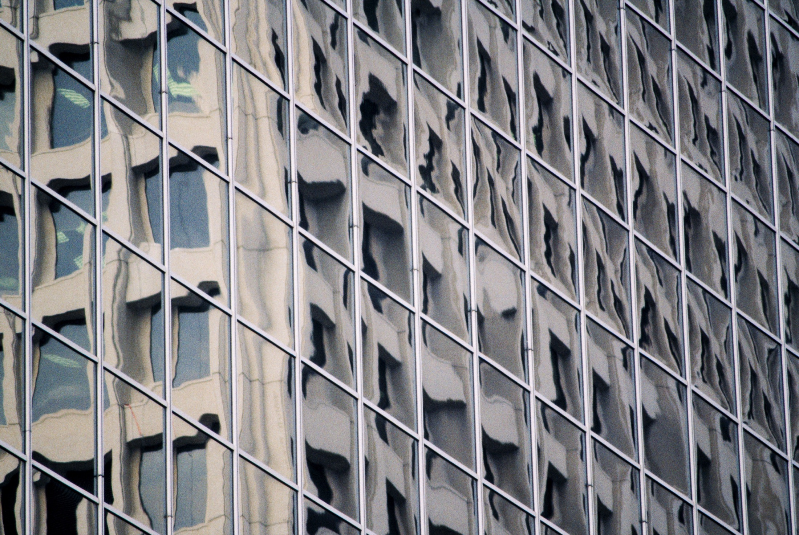
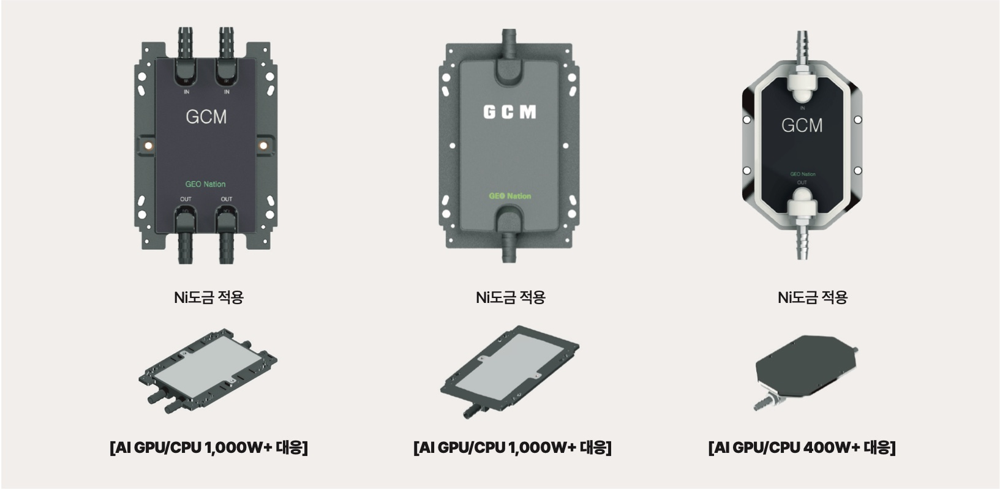
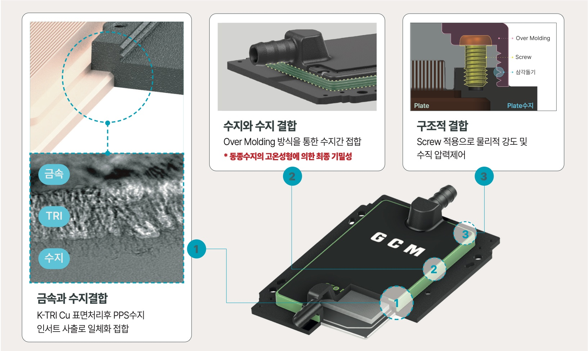
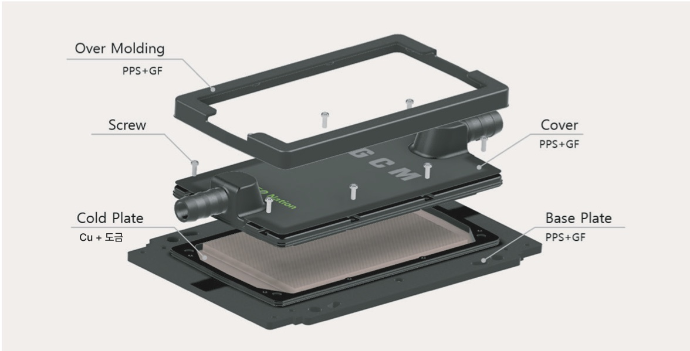
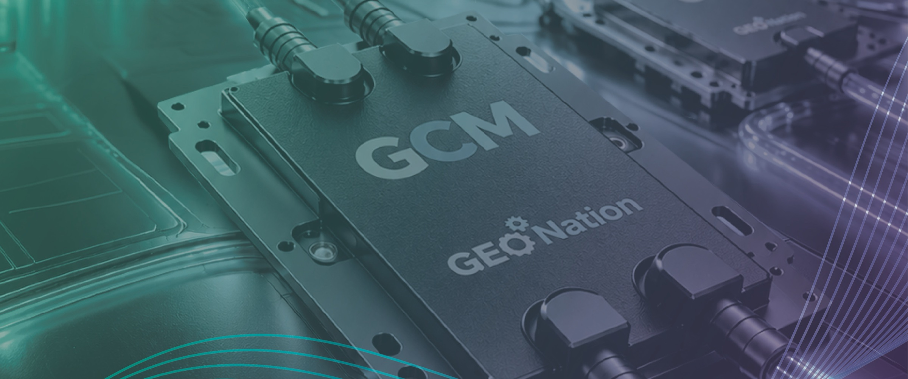

금속과 수지의 하이브리드 접합기술로 완성한 AI 서버 냉각 솔루션, GCM (GEO Nation Cold Plate Module)
제품 소개
1,000W+
대응 TDP
AI GPU / CPU
50~55%
경량화
WEIGHT DOWN
500,000
월 생산능력
UNITS / MONTH
100%
LEAK 검사
INSPECTED
GCM · GEO Nation Cold Plate Module
GCM이란?
GCM (GEO Nation Cold Plate Module)이란 금속과 수지의 하이브리드 접합기술을 적용하여 데이터 센터 서버 냉각에 최적화된 하이브리드 콜드플레이트 솔루션입니다.
특허출원완료

- 모델 1 · 2
- Ni도금 적용 — AI GPU/CPU 1,000W+ 대응
- 모델 3
- Ni도금 적용 — AI GPU/CPU 400W+ 대응

GCM
BEYOND METAL!
HALF THE WEIGHT!
ZERO LEAKS!

GCM 핵심기술
Zero-Leak를 완성시키는
실링 메커니즘
금속과 수지결합
K-TRI Cu 표면처리 후 PPS수지 인서트 사출로 일체화 접합
수지와 수지 결합
Over Molding 방식을 통한 수지간 접합. 동종수지의 고온성형에 의한 최종 기밀성
구조적 결합
Screw 적용으로 물리적 강도 및 수직 압력제어
Structure
GCM의 구조와
주요특징
가혹한 환경 및 장기간 누수 위험성 개선
O Ring의 한계를 정복한 금속과 수지의 접합기술(K-TRI Cu), Over Molding 기술
경량화와 낮은 제조비용
Full Metal 가공 방식에서 고강도 수지 접합방식으로 무게 및 원가 감소

- Over Molding
- PPS + GF
- Cover
- PPS + GF
- Screw
- 체결 구조
- Cold Plate
- Cu + 도금
- Base Plate
- PPS + GF
Advantage
GCM의 장점
기존(현재)의 Cold Plate와 GCM의 비교
| 비교항목 | 기존 ①O-ring 사양 | 기존 ②FULL METAL 사양 | GCM(이종접합사양) |
|---|---|---|---|
| 기밀방식 | O-ring, 나사 | 브레이징(brazing) or 마찰교반접합(FWS) 등의 용접 | K-TRI Cu, TRI 나사, Over Molding |
| Leakage | 고무부식/경화에 따른 누수 리스크 | 열중격시 용접부 균열 리스크 존재 | [완전 Block] K-TRI Cu접합, 수지 오버몰드 영구 접착 |
| 결로방지 | METAL 표면의 온도저하에 따른 결로발생 | FULL METAL 표면 결로발생 리스크 큼 | [우수] PPS수지의 단열효과 → 결로발생 없음 |
| 중량 | 상/하판 금속구조 | 전체 금속구조 | [경량화] 커버 및 하우징의 수지화 가능 (50~55%) |
| 내식성 & 수질유지 | 고무성분의 이온 용출에 대한 우려 | 이종금속/용접 플럭스의 부식 위험 | [우수] 화학적으로 비활성인 PPS + 구리핀구조 |
| 양산성 & 가격장점 | [양호] | 높은 가격의 용접 고정 필수, 비싼 재료비 | [우수] 커버 플라스틱화로 원가 절감 |
GCM의 적용분야와
냉각 퍼포먼스
- 대응 TDP
열설계 전력에 대응가능 - GPU/CPU 400W ~ 1,000W 등의 고성능 프로세서에 적합
- 적용분야
- 추론AI, 학습용AI GPU 서버, 데이터 센터, SSD, 게이밍PC
- 구조적 우위성
- 열교환의 90% 이상을 담당하는 하부 동(Cu) 마이크로핀과 수지커버의 조합에 의하여 최적화된 열저항(Thermal Resistance)을 구현

Full Copper Plate와
GCM 성능 비교
| 비교항목 | Full Copper Cold Plate | GCM(Copper + Plastic) |
|---|---|---|
| 전압 (V) | 205 | 205 |
| 출력전력 (W) | 703 | 703 |
| Ambient 온도 (°C) | 26.2 | 25.8 |
| CPU 온도 (°C) | 50.6 | 50.4 |
| 열저항 | 0.046 | 0.046 |
TEST 조건 기준 비교 결과
Mass Production & Quality
압도적인 양산성과
품질관리체계
GEO Nation Vietnam의 대규모 생산체제로 AI서버 수요의 확대에 즉각 대응합니다. 베트남 자사공장(GEO Nation Vietnam)의 최적시설을 활용하여 월 50만개(500,000 units/month)의 안정화된 생산능력이 구축되어 있으며, 급증하는 AI서버 수요와 대규모 데이터 센터 구축에 따른 스케일 향상에도 유연하고 신속하게 대응합니다.
Monthly Capacity
월 500,000
units / month
01
인서트성형에 의한 공정 단축
복잡한 조립이나 고가의 브레이징 공정대신 사출성형으로 변경하여 생산의 리드타임을 크게 단축
02
엄격한 품질보증
수작업 및 정밀 가공에 대한 의존도를 낮추어 대량생산시에도 높은 공정 능력지수(Cpk)와 균일한 품질을 보장
03
철저한 전수검사
ISO인증에 기반한 엄격한 기준을 적용한 출하검사, LEAK검사 100% 실시
Q&A
기술적 신뢰성 Q&A
이종재료 접합 및 소재의 신뢰성
이종재료(Cu vs PPS)의 열팽창계수 차이에 의한 Crack 위험성은?
K-TRI Cu의 접합 계면에 화학적 접합층을 형성하여 열수축으로 인한 틈이 생기지 않아 접착이 가능하며 높은 봉쇄성 및 내압 방수성을 기대할 수 있습니다.
장기사용시 수지(플라스틱)의 부식이나 경화 우려는?
GCM에는 자동차의 워터 펌프 등에도 사용되는 내열 260°C 이상의 PPS수지를 채용하고 있습니다. 내식성에 뛰어나며 금속 이온 용출이 없어 냉각수의 수질 유지에도 최적화 되어 있습니다.
냉각성능 및 내압성
탑커버를 수지로 변경함에 따른 냉각성능 저하는 없는지?
열교환의 90% 이상은 하부 동(Cu) 핀으로 진행되기 때문에 성능 저하가 없으며, 수지의 낮은 전도율이 단열재 역할을 하여 결로현상을 완벽하게 방지합니다.
고수압 환경에서 파손의 위험은 없는지?
스크류 체결과 K-TRI Cu의 접합 밀폐 구조에 의하여 요구되는 최대 동작 압력 및 파괴 압력의 사양을 초과하는 내압 성능을 이미 입증하였습니다.
K-TRI Cu 기술이란?
- 물리적 앵커 효과 (Mechanical Interlock / Anchor Effect)가 가장 핵심인 1차 접합 원리로, 겉보기에는 매끄러워 보이는 구리 표면을 화학적 엣칭(Etching)하여 마이크로(Micro) 및 나노(Nano) 레벨의 미세한 홀(Pore)과 복잡한 동굴과 같은 요철 구조를 형성합니다. 고온·고압의 사출성형 공정에서 용융된 PPS 수지가 구리 표면의 미세한 동굴 구조 안쪽까지 침투한 뒤, 동굴 내부에서 냉각·고화되는 공정에서 마치 닻(앵커)을 내리거나 사슬이 얽히는 것처럼 금속과 물리적으로 강하게 맞물립니다(고화 및 기계적 Lock). 이로써 수직 방향의 박리(부풀어오름)는 물론 수평 방향의 틀어짐도 근본적으로 차단됩니다.
- 화학적 결합 — 단순히 홀에 플라스틱이 충진되는 물리적 결합을 뛰어넘어 금속과 수지간의 분자 레벨로 화학적 결합이 동시에 발생합니다. TRI처리 공정에서 동의 표면에는 플라스틱과 반응하기 쉬운 특수한 산화피막과 하이드록실기(-OH) 등의 화학적 관능기(Functional Group)가 형성되며, 사출 성형기에서 약 300°C 이상의 고온으로 용융된 PPS수지가 금속표면에 닿는 순간 수지의 고분자 사슬과 구리 표면의 관능기가 서로 결합(공유결합 및 수소결합)하여 강력한 화학적 계면을 형성합니다(고온열 융착 반응).
- 표면의 습윤성 확대화 — TRI처리를 통해 동의 표면 에너지를 높여 수지가 응집하거나 기포가 형성되지 않으며, 미세한 입자가 요철 깊숙이 빈틈없이 스며들어 누설경로(누출경로)의 발생을 방지합니다.
물리적결합(앵커효과) + 화학적결합 + 표면 습윤성 확대화
이 세가지가 동시에 작용하여 강력하면서도 누출 없는 금속-수지접합을 구현합니다.
내압 리크 시험방법
- 가스 or 냉각유체로 가압
- 최대 운용압력으로 5분간 가압 후 누출 확인
- 운용압의 3배(최대 15Bar)를 2분간 가압 후 누출 확인
